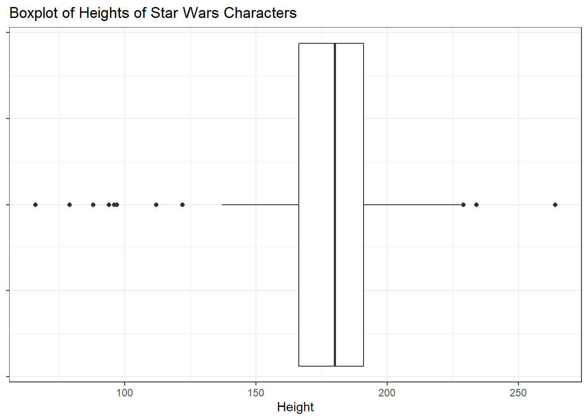
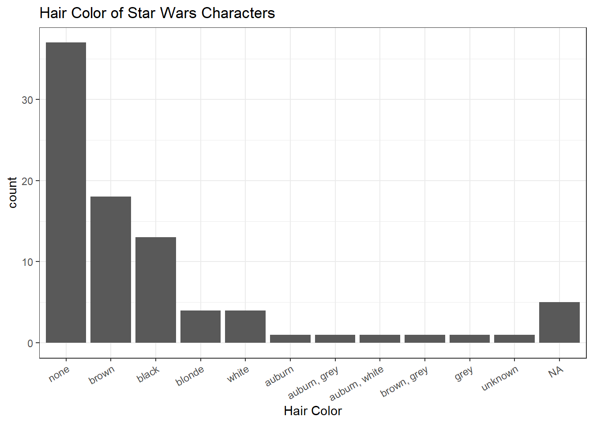
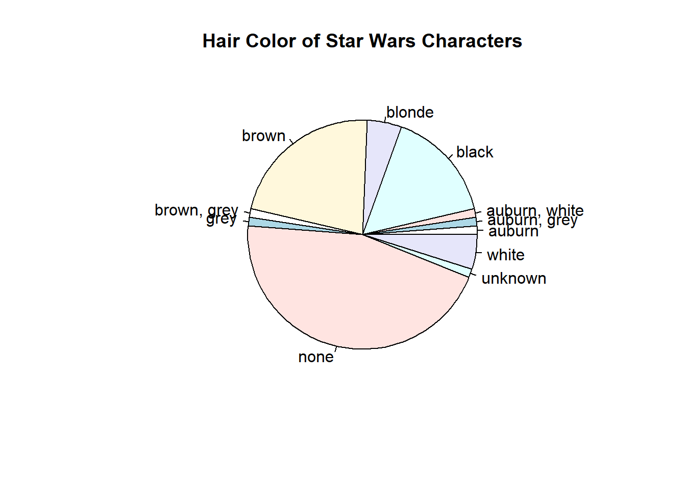

Unit 1 Introduction to Data
1.1 What is Data?
Data can be thought of simply as information, a collection of facts. An example would be this Star Wars dataset1 that will be used for illustrative purposes.
This is a collection of information about the characters in Star Wars such as height, hair color, and species. Each row is one observation.
1.2 Types of Data
In a more technical sense, data is “a set of values of qualitative or quantitative variables about one or more persons or objects”.2 The Star Wars dataset will be used to illustrate this concept.
The dataset contains 14 columns. Each column corresponds to a variable. A variable in statistics means an attribute. For example, height and hair color are variables and have a value for each observation.
Variables may be quantitative or qualitative. Numerical variables are those that take on quantitative values and represent some kind of measurement. The variable mass is an example of a quantitative variable.
Categorical variables, on the other hand, have qualitative values. Each value can be thought of as a “category” or label. An example would be eye_color from the Star Wars dataset, which has the following values:
"blue" "yellow" "red" "brown"
"blue-gray" "black" "orange" "hazel"
"pink" "unknown" "red, blue" "gold"
"green, yellow" "white" "dark" 1.3 Homework
The Motor Trend Car Road Tests dataset3 comprises fuel consumption and 10 aspects of automobile design and performance for 32 automobiles. Classify each variable in this dataset as numerical or categorical.
| mpg | cyl | disp | hp | drat | wt | qsec | vs | am | gear | carb | |
|---|---|---|---|---|---|---|---|---|---|---|---|
| Mazda RX4 | 21.0 | 6 | 160 | 110 | 3.90 | 2.620 | 16.46 | 0 | 1 | 4 | 4 |
| Mazda RX4 Wag | 21.0 | 6 | 160 | 110 | 3.90 | 2.875 | 17.02 | 0 | 1 | 4 | 4 |
| Datsun 710 | 22.8 | 4 | 108 | 93 | 3.85 | 2.320 | 18.61 | 1 | 1 | 4 | 1 |
| Hornet 4 Drive | 21.4 | 6 | 258 | 110 | 3.08 | 3.215 | 19.44 | 1 | 0 | 3 | 1 |
| Hornet Sportabout | 18.7 | 8 | 360 | 175 | 3.15 | 3.440 | 17.02 | 0 | 0 | 3 | 2 |
| Valiant | 18.1 | 6 | 225 | 105 | 2.76 | 3.460 | 20.22 | 1 | 0 | 3 | 1 |
- mpg - Miles/(US) gallon
- cyl - Number of cylinders
- disp - Displacement (cu.in.)
- hp - Gross horsepower
- drat - Rear axle ratio
- wt - Weight (1000 lbs)
- qsec - 1/4 mile time
- vs - Engine (0 = V-shaped, 1 = straight)
- am - Transmission (0 = automatic, 1 = manual)
- gear - Number of forward gears
- carb - Number of carburetors
1.4 Measures of Central Tendency4
The mean, median, and mode are known as measures of central tendency in statistics and are called such because they represent what is a typical or central value. They can be thought of as “average values”.
- Mean - the sum of all measurements divided by the number of observations in the dataset
- Median - the middle value that separates the higher half from the lower half of the dataset
- Mode - the most frequent value in the data set
1.5 Measures of Variability
The range, interquartile range (IQR), variance, and standard deviation are known as the measures of variability. They describe how far away observations tend to fall from the center.5
- Range - the difference between the maximum and the minimum
- IQR - the difference between the third quartile and the first quartile
- variance - the average squared deviation of each number from the mean of a data set
- Standard deviation - the square root of the variance
1.6 Examining Numerical Data
1.6.1 Numerical Methods
The most common way to explore numerical data numerically is by calculating what are called summary statistics. A summary statistic is a quantity that summarizes the data into a single point in order to present information as simply as possible.
The three measures of central tendency are examples of summary statistics, and there are several others which might be familiar. One common set of summary statistics is known as the five-point summary, and is comprised of:
- minimum
- first quartile (25th percentile)
- median
- third quartile (75th percentile)
- maximum
To illustrate, here is a five-point summary for the mass of the Star Wars characters:
Min. 1st Qu. Median Mean 3rd Qu. Max. NA's
15.00 55.60 79.00 97.31 84.50 1358.00 28 The last column labeled NA's gives the number of unknown values. This is not part of the five-point summary, but is a useful addition because it shows how many values were missing. There are 87 observations in the Star Wars dataset, but since 28 values for mass are missing, only 59 values were considered in calculating the five-point summary above.
1.6.2 Graphical Methods
Numerical data can be visualized and examined using different types of graphs. Histograms and boxplots are two of common types of graphs used to visualize numerical variables.
Below is a histogram of the heights of Star Wars characters:

The horizontal (or x-) axis of the histogram corresponds to the variable of interest. The y-axis displays the counts of observations that fall within each interval or bin. Note that in constructing the histogram, the left boundaries or endpoints are not included. For example, there are 20 characters (tallest bar) with a height greater than 175 cm but not greater than 185 cm. Those with a height of exactly 175 cm are included in the previous bar.
Histograms show the distribution of data. A more technical definition of the term will be introduced later in the course but for now, it would suffice to think of distributions as showing possible values of the data and how often they occur6. From the histogram, one can see which values of the variable are more and less likely. In the example, most characters are at least 175 cm in height but are not taller than 185 cm. Also, there are characters who are significantly taller than the rest, as evidenced by the rightmost bar on the graph.
Boxplots are another way of graphing numerical data, and they present different information from histograms. Below is a boxplot of the heights of Star Wars characters:

Instead of presenting the frequency of the data, boxplots show the summary statistics presented in the previous section:
- median - the line in the middle
- Q1/first quartile - left edge of the box
- Q3/third quartile - right edge of the box
The black points in the plot correspond to outliers, which are data points that deviate significantly from the other observations. In the context of this example, the points on the right represent the extremely short characters (like Yoda) while the points on the left are the towering characters (like Yarael Poof).
1.7 Examining Categorical Data
1.7.1 Tabular Methods
Two types of tables are used most commonly in summarizing categorical data. These are frequency tables and contingency tables.
1.7.1.1 Frequency Tables
A frequency table shows “numbers and percentages for each value”7 of the categorical variable. In effect, it presents the distribution of observations across all possible responses. As an example, here is a frequency table for the hair_color variable in the Star Wars dataset.
starwars$hair_color :
Frequency %(NA+) %(NA-)
none 37 42.5 45.1
brown 18 20.7 22.0
black 13 14.9 15.9
<NA> 5 5.7 0.0
blonde 4 4.6 4.9
white 4 4.6 4.9
auburn 1 1.1 1.2
auburn, grey 1 1.1 1.2
auburn, white 1 1.1 1.2
brown, grey 1 1.1 1.2
grey 1 1.1 1.2
unknown 1 1.1 1.2
Total 87 100.0 100.0The percentages displayed are called relative frequencies and are calculated based on the total number of observations. Consider the row for <NA>, which refers to missing values in the data set. The %(NA+) column tells us that 5.7% of the total observations have missing values for hair color. Looking at the %(NA-) column, the percentage is now 0. That is because this column gives percentages relative to the total observations minus the missing values.
1.7.1.2 Contingency Tables
A contingency table displays the relationship between one categorical variable and another. It is called such because it allows us to examine whether the values of one variable are contingent (dependent) upon those of another.8
Here is a contingency table for the variables gender and hair color:
feminine masculine Sum
auburn 1 0 1
auburn, grey 0 1 1
auburn, white 0 1 1
black 3 9 12
blonde 1 3 4
brown 6 11 17
brown, grey 0 1 1
grey 0 1 1
none 5 31 36
unknown 0 0 0
white 1 3 4
Sum 17 61 781.7.2 Graphical Methods
Categorical data can also be presented using graphs. The most common types are bar charts and pie charts.
1.7.2.1 Bar Charts
Shown here is a bar chart for the hair color of Star Wars characters:

The bar chart is the equivalent of a histogram for categorical variables. Each bar will correspond to a row in the frequency table from the previous section. Several facts can be deduced from this graph. Most characters in the dataset have no hair but among those that do, the most common hair color is brown.
1.7.2.2 Exercise:
What other facts about the data does this bar chart show? Give at least one.
1.7.2.3 Pie Chart
Below is a pie chart for the same variable, hair color, which was presented in the previous sections.

Although pie charts are commonly seen in infographics and posters, it is not considered as a good visualization because there is no scale present. The angles of the wedges cannot be compared directly, which makes it difficult to deduce whether one piece of the pie is larger than the other. Comparing this to the bar graph in the previous section, it is easy to see which chart is more effective at conveying information.
There are several resources online which explain the ineffectiveness of pie charts in much greater detail. An article in Business Insider explains very well why using a pie chart is a bad visualization technique.
1.8 Aside: Some Number Theory
Digressing from the discussion on data, this section will introduce some basic notations in number theory in preparation for the discussion on probability distributions.
1.8.1 The Factorial
In mathematics, the factorial of a non-negative integer \(n\), denoted by \(n!\), is the product of all positive integers less than or equal to \(n\):
\[n! = n \times (n - 1) \times (n - 2) \times (n - 3) \times \dotsc \times 3 \times 2 \times 1\]
For example, \(3!\) is equal to \(3 \times 2 \times 1 = 6\), while \(5!\) is \(5 \times 4 \times 3 \times 2 \times 1 = 120\).
By definition, \(0!\) is 1.
1.8.2 Combinations
“A combination is a mathematical technique that determines the number of possible arrangements in a collection of items where the order of the selection does not matter.”9
Consider a small office with 7 employees. Since the company provides free lunch, a lunch committee consisting of 3 members is needed to decide the weekly menu. How many possible commitees of 3 can be created?
The above is an example of a combination problem. It is equivalent to counting the number of ways a group of 3 can be chosen from a bigger group of 7. In mathematics, this is denoted as \({7 \choose 3}\) and read as 7 choose 3 or more generally, \({n \choose k}\) where \(n\) is the total number of items and \(k\) the number of items to be selected.
To obtain the value of such an expression, the following formula is used:
\[{n \choose k} = \frac{n!}{r! (n - r)!}\]
Using this formula, the total number of possible committees is:
\[ \begin{align} {n \choose k} &= \frac{n!}{r! (n - r)!} \\ {7 \choose 3} &= \frac{7!}{3! (7 - 3)!} \\ {7 \choose 3} &= \frac{7!}{3! \cdot 4!} \\ {7 \choose 3} &= \frac{7 \cdot \cancel{6} \cdot 5 \cdot \cancel{4!}}{\cancel{3!} \cdot \cancel{4!}} = 35 \end{align} \]
Answer: There are 35 possible ways of selecting a lunch committee of 3 from a group of 7.